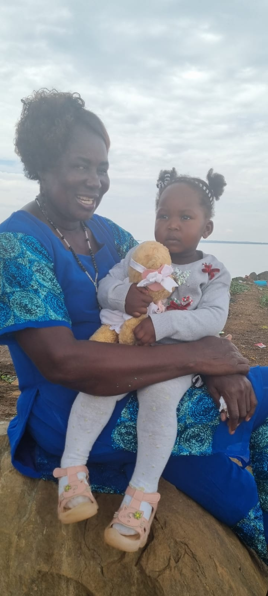

Established in 2007, the FORGE AHEAD foundation brings together human, financial and technical resources to address the challenges faced by the poorest and most marginalised communities in the world. Special emphasis is placed on investing in human potential, expanding opportunity and improving the overall quality of life.
FORGE AHEAD foundation works primarily in six areas with gender equality and inclusion mainstreamed throughout all programmes: Agriculture and Food Security; Economic Inclusion; Education; Early Childhood; Health and Nutrition; and Civil Society.
